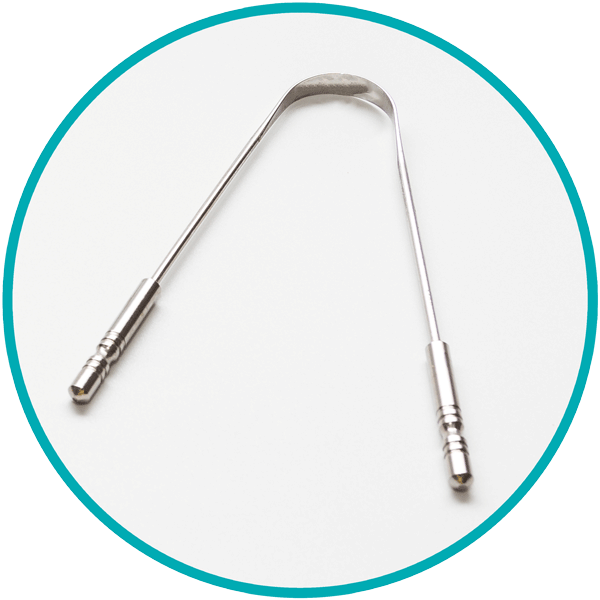
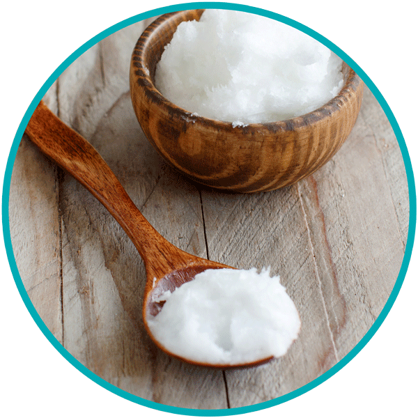
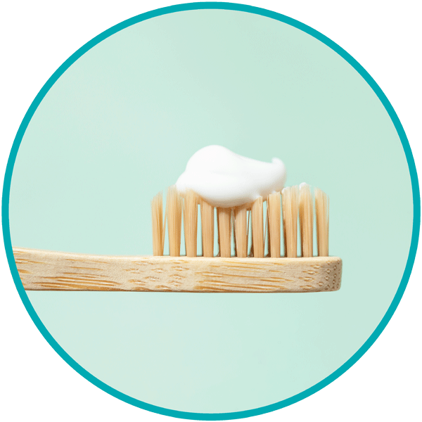

Ayurvedic oral hygiene and dental care
August 04 2021,
Dušica Pavlović
MORNING ROUTINE. Did you know that tooth decay and diseases of the periodontium are among the most common diseases worldwide? Ayurveda has successful strategies so that we can optimally care for teeth, gums and oral cavity and keep them healthy.
We'll tell you why Ayurvedic oral hygiene is so much more than just cleaning your teeth and what Ayurveda experts recommend so that plaque, bad breath, tooth decay and gingivitis do not even become a problem.
Beautiful, well-cared for teeth stand for vitality and attractiveness. They make us smile, make us feel good and are important for our digestion because they help us chew food.
Thoroughly brushing your teeth is one of the first steps in the Ayurvedic morning routine and a prerequisite for keeping our teeth healthy. Ayurveda recommends brushing your teeth in the morning and in the evening, but, interestingly, not necessarily after every meal in order to prevent the natural enamel and the "good" bacteria from being removed. However, Ayurveda recommends rinsing your mouth with clear water after eating and also recommends using some spices such as fennel, sesame or cardamom to freshen your mouth and get fresh breath.
For a healthy oral cavity there are tree crucial steps you should follow every day:
tongue cleaning, cleaning with oil and normal teeth brushing.
1. Morning tongue cleaning
Whether when speaking, tasting or digesting: our sensitive tongue is a valuable tool. Reason enough to pay more attention to it. Because: During the night, toxins and waste materials or ama (see notes) collect on our tongue. For some people this even leads to an unpleasant, noticeable and visible coating. These plaques sometimes appear due to indigestion. According to studies, regular tongue cleaning can demonstrably reduce the deposit and give us a noticeably clean tongue.
In Ayurveda, cleaning the tongue in the morning with a tongue cleaner (Jivha nirlekhan) has a tradition that goes back thousands of years. A method that is as simple as it is effective, as further studies confirm: A study in Toronto found that cleaning the tongue reduces foul gases and bad breath by around 75%, while normal teeth cleaning only achieves this by around 25%. The mechanical removal of microorganisms therefore plays a key role in combating bad breath. In addition, like brushing your teeth, it can help reduce the individual risk of tooth decay and strengthen dental health, according to the North Rhine Association of Statutory Health Insurance Physicians.
The tongue cleaner should be made of stainless steel or silver or silver-plated if possible. The latter has the advantage that it also has a bacteria-inhibiting effect. Plastic is less suitable, as it could release microplastics with regular use, which can penetrate further into the body and disrupt the tongue flora.
Under no circumstances should you brush your tongue with a toothbrush, as this can damage the sensitive taste papillae on the tongue.
Tongue cleaning - quick & easy
- Grasp the tongue cleaner by the ends with both hands and hold it horizontally.
- Place the bow flat on the base of the tongue and gently pull the tongue cleaner over the tongue a few times from back to front.
- Rinse your mouth with a little water and rinse the tongue cleaner under running water.
2. Gandusha - intensive cleansing with oil
The most important basis for oil cleaning: Always carry out the oil treatment on an empty stomach, i.e. before you brush your teeth in the morning and after you cleaned your tongue. Ideally, you haven't had anything to drink yet - that means you should also wait with the first coffee or tea of the day.
Cleaning with oil
-
Take about one to two teaspoons of the selected vegetable oil in your mouth, which you then keep moving by pulling it through your teeth, rinsing, chewing and sucking.
- At best, the oil should stay in the mouth for 15 to 20 minutes, but never swallowed, as toxins bound in the oil will otherwise be swallowed. If you can't hold out for 20 minutes at first, start with oil pulling for 5-10 minutes. If you have already carried out the Ayurveda method a few times, you will quickly notice that you can make friends with the oil remaining in your mouth for a longer period of time.
- Spit out the oil after pulling the oil. You will notice that the once clear oil has turned milky and may have darkened. This shows that the oil treatment has actually effectively bound pollutants.
- Then rinse your mouth thoroughly with clear, lukewarm water - ideally in several passes, in order to completely remove the residues of the oil and the harmful substances it contains in the oral cavity.
- After rinsing your mouth, you can brush your teeth as usual.
With daily use, an effect is noticeable after around four to five days: the teeth feel cleaner, smoother and generally healthier. If you do not want to use oil pulling permanently, but rather several times a year as a detoxification cure, a period of 10 to 20 days is suitable, in which you carry out the oil cleansing in the morning.
3. Brushing your teeth
After you have cleaned your tongue and pulled the oil you should brush your teeth as usual. It would be optimal if you use special ayurvedic tooth-paste, since they contain highly concentrated herbs and essential oils.
Integrate this great morning routine in your life and your teeth will be healthy and happy 😊
Photo credits:
iStockphoto